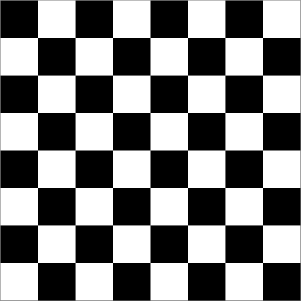

Wisselende stelsels
Contents
Wisselende stelsels#
Naam |
Beschrijving |
|---|---|
Onderwerp |
Getallen omzetten naar verschillende grondtallen |
Bestandsnaam |
|
Inleveren |
Lever jouw bestand met de juiste bestandsnaam in op GradeScope |
De volgende problemen hebben allemaal te maken met de weergave van grondtallen en het converteren of het berekenen ervan.
Om te beginnen zal je worden gevraagd om van grondtal 10 naar andere grondtallen te converteren en omgekeerd. Omdat bij grondtallen groter dan grondtal 10 nieuwe “cijfers” nodig zijn, beperken we ons tussen grondtallen van 2 tot en met 10.
Functie 1: num_to_base_b(n, b)#
Schrijf een Python functie num_to_base_b(n, b), die een (niet negatieve) integer n en een grondtal b (van 2 tot en met 10) accepteert en een string teruggeeft die het getal n in grondtal b voorstelt.
Je hoeft niet te controleren of b tussen 2 en 10 ligt, we zullen ervoor zorgen dat dit de enige waarden zijn die we testen.
Vergeet ook niet dat hier integerdeling (zonder cijfers achter de komma) nodig is. In Python wordt bij integerdeling altijd naar beneden afgerond en daar gebruik je // voor, bijvoorbeeld,
18 // 7 == 2
Hier zie je een aantal voorbeelden:
In [1]: num_to_base_b(3116, 9)
Out[1]: '4242'
In [2]: num_to_base_b(141474, 8)
Out[2]: '424242'
In [3]: num_to_base_b(42, 8)
Out[3]: '52'
In [4]: num_to_base_b(42, 5)
Out[4]: '132'
In [5]: num_to_base_b(42, 10)
Out[5]: '42'
In [6]: num_to_base_b(42, 2)
Out[6]: '101010'
In [7]: num_to_base_b(4, 2)
Out[7]: '100'
In [8]: num_to_base_b(4, 3)
Out[8]: '11'
In [9]: num_to_base_b(4, 4)
Out[9]: '10'
In [10]: num_to_base_b(0, 4)
Out[10]: '' # merk op dat als n 0 is we een lege string willen!!
In [11]: num_to_base_b(0, 2)
Out[11]: '' # merk op dat als n 0 is we een lege string willen!!
Opmerkingen
Vergeet niet dat jouw functie een string en niet een getal moet teruggeven! Verder,
De functie
num_to_binarydie je eerder hebt geschreven is een goed begin…Vraag jezelf af, wat moet er veranderen om waarden in grondtal
bterug te geven in plaats van grondtal 2?
Hier zie je een aantal tests die je kan gebruiken:
assert num_to_base_b(0, 4) == ''
assert num_to_base_b(42, 5) == '132'
Je kan er natuurlijk meer bedenken!
Tips
Jouw code moet een lege string teruggeven wanneer de waarde van n 0 is (dit voorkomt voorloopnullen!)
Gebruik de volgende twee Python functies voor het heen en weer schakelen tussen strings en getallen. Deze zijn het meest nuttig als je daar enkele tekens of getallen gebruikt:
str(x)geeft het getal (de integer)xterug als stringint(x)geeft de integerwaarde van de stringsterug, Python zal eenValueErrorgeven alssgeen integer voorstelt
Functie 2: base_b_to_num(s, b)#
We willen natuurlijk de omgekeerde conversie ook kunnen doen!
Daarom ga je een Python functie base_b_to_num(s, b) schrijven die een string s en een grondtal b accepteert, waarbij s een getal in grondtal b voorstelt en b een getal van 2 tot en met 10 is. De functie base_b_to_num moet een integer in grondtal 10 teruggeven die hetzelfde getal voorstelt als s.
Je hoeft niet te controleren of b tussen 2 en 10 ligt, we zullen ervoor zorgen dat dit de enige waarden zijn die we testen.
Hier zie je een aantal voorbeelden, controleer dat de eerste twee werken (het zijn de grootste voorbeelden die we zullen gebruiken):
In [1]: base_b_to_num("5733", 9)
Out[1]: 4242
In [2]: base_b_to_num("1474462", 8)
Out[2]: 424242
In [3]: base_b_to_num("222", 4)
Out[3]: 42
In [4]: base_b_to_num("101010", 2)
Out[4]: 42
In [5]: base_b_to_num("101010", 3)
Out[5]: 273
In [6]: base_b_to_num("101010", 10)
Out[6]: 101010
In [7]: base_b_to_num("11", 2)
Out[7]: 3
In [8]: base_b_to_num("11", 3)
Out[8]: 4
In [9]: base_b_to_num("11", 10)
Out[9]: 11
In [10]: base_b_to_num("", 10)
Out[10]: 0 # de lege string moet 0 opleveren
Opmerkingen
Vergeet niet dat jouw functie een getal teruggeeft, en een string als argument s accepteert! Verder,
Het
bin_to_numvoorbeeld die je eerder hebt gezien is een goed begin…Vraag jezelf weer af, wat moet er veranderen om waarden in grondtal 2 terug te geven in plaats van grondtal
b?
Gebruik de bovenstaande voorbeelden in jouw tests!
Tips
Jouw functie base_b_to_num moet 0 teruggeven als s een lege string is. Verder,
Zoals gewoonlijk zal het meest rechtse karakter van de string de “een“‘en kolom zijn,” het minst significante getal in grondtal
b.… maar dat betekent dat de waarde van het meest rechtse teken gewoon
int(s[-1])is!
Nogmaals, hier zijn de Python functies om strings en getallen in elkaar om te zetten:
str(x)geeft het getal (de integer)xterug als stringint(x)geeft de integerwaarde van de stringsterug, Python zal eenValueErrorgeven alssgeen integer voorstelt
Functie 3: base_to_base(b1, b2, s_in_b1)#
Nu kunnen we wat we geschreven hebben samenvoegen tot een functie base_to_base(b1, b2, s_in_b1) die drie argumenten accepteert, een grondtal b1, een grondtal b2 (beide met een waarde tussen 2 tot en met 10) en s_in_b1, wat een string is die een getal in grondtal b1 voorstelt.
De functie base_to_base moet een string teruggeven die dezelfde waarde in grondtal b2 vertegenwoordigt.
Hier zijn een aantal voorbeelden:
In [1]: base_to_base(2, 10, "11") # 11 in grondtal 2 is 3 in grondtal 10...
Out[1]: '3'
In [2]: base_to_base(10, 2, "3") # 3 in grondtal 10 is 11 in grondtal 2...
Out[2]: '11'
In [3]: base_to_base(3, 5, "11") # 11 in grondtal 3 is 4 in grondtal 5...
Out[3]: '4'
In [4]: base_to_base(2, 3, "101010")
Out[4]: '1120'
In [5]: base_b_to_num("1120", 3)
Out[5]: 42
In [6]: base_to_base(2, 4, "101010")
Out[6]: '222'
In [7]: base_to_base(2, 10, "101010")
Out[7]: '42'
In [8]: base_to_base(5, 2, "4321")
Out[8]: '1001001010'
In [9]: base_to_base(2, 5, "1001001010")
Out[9]: '4321'
Opmerkingen
Ga geen conversie functies herschrijven! Converteer in plaats daarvan het getal naar decimaal en dan terug naar de gewenste grondtal!
Hier zijn een paar tests:
assert base_to_base(2, 4, "101010") == "222"
assert base_to_base(2, 5, "1001001010") == "4321"
Tips
Gebruik eerst
base_b_to_numom een gewoon, decimaal getal voors_in_b1te krijgen. Geef het een naam.Gebruik dan de functie
num_to_base_bom die waarde om te zetten naar het juiste grondtal!
Functie 4: add(s, t)#
Dit is een korte opgave om de functies die je hebt geschreven te gebruiken!
Schrijf een functie add(s, t) die twee binaire strings s en t accepteert en hun som als resultaat teruggeeft terugstuurt, ook als binaire string.
We raden je aan dit te doen door de twee binaire strings om te zetten in twee getallen in grondtal 10, de twee getallen bij elkaar op te tellen en de resulterende som vervolgens weer om te zetten naar grondtal 2!
Hier zijn een aantal voorbeelden:
In [1]: add("11", "1")
Out[1]: '100'
In [2]: add("11", "100")
Out[2]: '111'
In [3]: add("110", "11")
Out[3]: '1001'
In [4]: add("11100", "11110")
Out[4]: '111010'
In [5]: add("10101", "10101")
Out[5]: '101010'
Functie 5: add_b(s, t)#
Hierboven zag je een manier om twee binaire getallen op te tellen: zet ze eerst om naar grondtal 10, tel deze getallen op en zet vervolgens de uitkomst weer om naar een binaire string.
Bij deze opgave zal je echter een andere, meer directe, methode implementeren voor het optellen van twee binaire getallen, met behulp van de “basisschool” methode die eerder is besproken:
101110
100111
--------
Dit ziet er na optelling als volgt uit:
111
101110
100111
--------
1010101
Je ziet hier de “carry” bits op de eerste regel.
Schrijf voor dit probleem een Python functie add_b(s, t) die twee strings als argument accepteert. Deze strings stellen binaire getallen voor.
De functie add_b moet een nieuwe string teruggeven die de som van de twee argumenten voorstelt.
De som moet berekend worden met het “basisschool” binaire optelalgoritme, zoals hierboven is besproken, en niet met basisconversies (door grondtallen om te zetten). Dat wil zeggen dat de optelling puur syntactisch zal moeten zijn: je gebruikt de opteloperator + voor getallen van Python niet.
Tips
Je hebt op zijn minst twee base cases nodig. Eén base case om te overwegen is wat als
sgeen karakters meer heeft, maartnog wel: wat zou de juiste string zijn om terug te geven?De “carry” case (als je een bit moet “onthouden”) is een ander lastig onderdeel van dit probleem.
Wanneer je een bit moet meenemen, zal je drie strings toe moeten voegen: (1) de rest van
s(s[:-1]), (2) de rest vant, en de extra carry string, die gewoon'1'is.De oplossing is om twee keer
add_bte gebruiken: één keer om de carry string bij een van de twee “rest” strings toe te voegen, en een tweede keer om het eerste resultaat toe te voegen aan de andere van de twee “restanten”!
Hier is een begin:
def add_b(s, t):
""" docstring: deze moet je nog invullen
"""
# basisgevallen!
# Er zullen vier recursieve gevallen zijn; dit is de eerste:
if s[-1] == '0' and t[-1] == '0':
return add_b(s[:-1], t[:-1]) + '0' # 0 + 0 == 0
# je moet nog drie recursieve gevallen benoemen...
Hier zijn een paar voorbeelden:
In [1]: add_b("11100", "11110")
Out[1]: '111010'
In [2]: add_b("10101", "10101")
Out[2]: '101010'
In [3]: add_b("11", "1")
Out[3]: '100'
In [4]: add_b("11", "100")
Out[4]: '111'
En hier een aantal tests:
assert add_b("11", "100") == "111"
assert add_b("11100", "11110") == "111010"
assert add_b("110", "11") == "1001"
assert add_b("110101010", "11111111") == "1010101001"
assert add_b("1", "1") == "10"
Functies #6 en #7: compress(s) en uncompress(c):#
Beeldcompressie#
Tot nu toe hebben we onderzocht hoe getallen in binaire vorm worden weergegeven, maar in dit probleem onderzoeken we de weergave van beelden met behulp van 0’s en 1’s.
Voor dit deel schrijf je twee functies, compress(s) en uncompress(c), samen met een of meer hulpfuncties.
Om te beginnen bekijken we alleen 8 bij 8 zwart-wit afbeeldingen zoals de afbeelding hieronder:

Elke cel in de afbeelding wordt een “pixel” genoemd. Een witte pixel wordt voorgesteld door het cijfer 0 en een zwarte pixel door het cijfer 1. Het eerste cijfer staat voor de pixel in de linkerbovenhoek van de afbeelding. Het volgende cijfer staat voor de pixel in de bovenste rij en de tweede kolom. Het achtste bit (cijfer) staat voor de pixel aan de rechterzijde van de bovenste rij. Het volgende bit staat voor de meest linkse pixel in de tweede rij, enzovoort. Daarom wordt de bovenstaande afbeelding weergegeven door de volgende binaire string met lengte 64:
"1010101001010101101010100101010110101010010101011010101001010101"
Een andere manier om deze string voor te stellen in Python is
"1010101001010101" * 4
Achtergrond#
Maar wat nu? Stel je voor, je bent ingehuurd door HASA (“Hanze Air and Space Administration”). HASA heeft een satelliet die 8 bij 8 zwart-wit beelden neemt en deze terugstuurt naar de aarde als binaire strings van 64 bits zoals hierboven beschreven. Om kostbare energie te besparen die nodig is voor het verzenden van gegevens, wil HASA de verzonden beelden “comprimeren” in een formaat dat zo weinig mogelijk bits gebruikt. Een manier om dit te doen is door gebruik te maken van het “run-length” coderingsalgoritme.
Stel je voor dat we een beeld hebben dat er als volgt uitziet:

Met behulp van onze standaard opeenvolging van 64 bits wordt dit beeld weergegeven door een binaire reeks die begint met 16 opeenvolgende 0’en (voor twee rijen witte pixels) gevolgd door 16 opeenvolgende 1’en (voor twee rijen zwarte pixels) gevolgd door 16 opeenvolgende 0’en gevolgd door 16 opeenvolgende 1’en.
Run-length codering (die overigens ook wordt gebruikt als onderdeel van het JPEG beeldcompressie-algoritme) stelt voor om dit beeld weer te geven met de code “16 wit, 16 zwart, 16 wit, 16 zwart”. Dat is een veel kortere beschrijving dan het opsommen van de reeks van 64 pixels “wit, wit, wit, wit, …”.
Run-length encoding#
In het algemeen stelt onze run-length codering een beeld voor met een sequentie (een rij, of “run-length sequence” genoemd) van 8-bits bytes:
Het eerste bit van elke byte vertegenwoordigt het bit dat als volgende in het beeld zal verschijnen, ofwel 0 ofwel 1.
De laatste zeven bits bevatten het nummer in binaire vorm van de bits die achtereenvolgens op de huidige plaats in het beeld verschijnen.
Merk op dat deze run-length codering een relatief klein aantal bits zal gebruiken om het voorbeeld met 4 strepen hierboven weer te geven.
Het zal het echter zeer slecht doen (in termen van het aantal bits dat het gebruikt) in het representeren van de dambord afbeelding die we eerst bekeken hebben. In het algemeen doet de run-length codering het goed om afbeeldingen die grote blokken met effen kleuren hebben te “comprimeren”. Gelukkig geldt dit voor veel echte afbeeldingen, zoals de afbeeldingen die HASA ontvangt, die meestal wit zijn met een paar zwarte vlekken die hemellichamen voorstellen.
Functie 6: compress(s)#
Dat was een hoop informatie! Hier is nu jouw taak.
Schrijf een functie compress(s), waarvan het argument een binaire string s is met een lengte van minder dan of gelijk aan 64 en dat als resultaat een andere binaire string teruggeeft. De resulterende binaire string zou een run-length codering van het origineel moeten zijn, zoals hierboven beschreven.
Je hebt misschien één of meerdere hulpfunctie nodig en je mag ze elke naam geven die je wilt. Ook kan het zijn dat je één of meerdere functies uit het practicum of deze opgave wilt gebruiken!
Functie 7: uncompress(c)#
Schrijf vervolgens een functie uncompress(c) die het comprimeren van de functie compress “omkeert” of “ongedaan maakt”.
Dat wil zeggen, uncompress(compress(s)) zou s moeten teruggeven. Hier is een leuke test die dat punt illustreert:
assert uncompress(compress(64 * "0")) == 64 * "0"
Nogmaals, hulpfuncties zijn toegestaan, net als het gebruik van functies die je bij vorige opdrachten hebt geschreven.
Hier zijn een paar voorbeelden van compress en decompress in actie:
In [1]: compress(64 * "0")
Out[1]: '01000000'
In [2]: uncompress("10000101") # 5 1'en
Out[2]: '11111'
In [3]: compress("11111")
Out[3]: '10000101'
In [4]: stripes = "0" * 16 + "1" * 16 + "0" * 16 + "1" * 16
In [5]: compress(stripes)
Out[5]: '00010000100100000001000010010000'
In [6]: uncompress("00010000100100000001000010010000")
Out[6]: '0000000000000000111111111111111100000000000000001111111111111111'